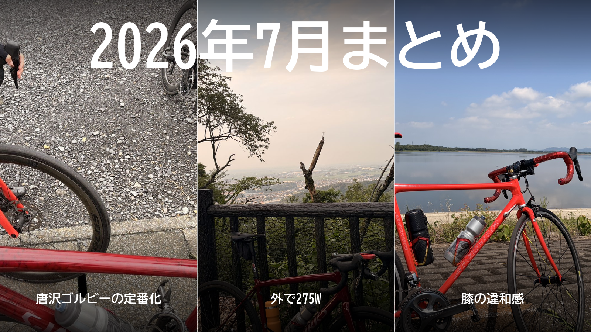

2026年7月まとめ。唐沢ゴルビーの定番化、外で275W、膝の違和感
7月は、6月に見えた課題を、外では短く強く、ローラーでは長く一定に、と役割を分けて潰しにいった月だった。大きな出来事は3つ。5分間坂で踏める唐沢ゴルビーが定番になったこと、外で275Wを長く踏めるようになってきたこと、そして積んだぶん膝から小さな警告が出たこと。

7月の走行距離と時間
外とローラーの内訳
6月より6回、約220km、約12時間増えた。獲得標高は約2,800m増えていて、増えた分の多くは外の登りである。アウトドアにはMTBの1回、インドアには借りたスマートローラーで走った2回を含む。
トピック1：唐沢ゴルビーが定番になった
ゴルビーは、唐沢山の登りで5分全開を5本繰り返す練習である。7月は4回やって、4回とも5本を走り切った。
| 日付 | 1本目 | 2本目 | 3本目 | 4本目 | 5本目 | 平均 |
|---|---|---|---|---|---|---|
| 7月1日 | 340W | 341W | 328W | 318W | 319W | 約329W |
| 7月7日 | 331W | 339W | 337W | 330W | 340W | 約335W |
| 7月18日 | 338W | 354W | 352W | 331W | 336W | 約342W |
| 7月28日 | 348W | 339W | 333W | 323W | 317W | 約332W |
始まりは1日。Garminに「無酸素運動が足りない」と言われて330W以上を狙ったが、後半に垂れた。7日は予定の3〜4本を超えて5本まで行き、5本目が一番強かった。18日は雨上がりに友人と3人で走り、途中でパンク修理をはさんでも平均は7月で一番高く、5分で進めた距離も過去最長。28日は1本目を飛ばしすぎて、5本目まで落ち続けた。走り切るのは当たり前になったので、次の課題は5本をどう揃えるかに変わった。
トピック2：外で275Wを長く踏めるようになってきた
はっきり変わったのは21日。太平山を登ったあと、帰り道のストレートで17分半を278Wで踏めた。それまで、練習の基準にしている275Wは見るだけで身構える数字だった。それが、外ならしばらく踏める数字になってきた。
ただし、これは外の話である。外とローラーでは、同じ275Wでも重さがまるで違う。今もローラーの20分では275Wは踏めない。ローラーではSSTを積み、27日に25分×2を249W・254Wで完遂した。6月の目標「1時間300W」に向けて、外では275Wが見え始め、ローラーでは20分×2が25分×2まで伸びた月である。
トピック3：膝の違和感で、止めずに強度だけ落とした
7〜9日にゴルビー・SST・太平と3日続けて強く踏み、10日、普段の生活の中で膝の前側に軽い違和感が出た。乗っている最中は痛まない。完全に休むのでも無視するのでもなく、数日は重いギア・ダンシング・高出力をやめることにした。
その日は渡良瀬遊水地の平坦を回復走。11日は友人と唐沢を5本、会話できるペースで登った。悪化はせず、違和感は少しずつ引いていった。14日に違和感が消えたのを確かめてから唐沢・琴平の高負荷ライドに戻り、琴平で309W。4日で通常の練習に戻れた。やりすぎの線引きが難しい。
そのほかの練習
7月は暑さとの戦いでもあった。16日は最高38℃の中で太平・琴平・唐沢を走り、22日は室温33℃・湿度70％のローラーでSSTの2本目が踏めなかった。
練習の合間には、友人とのライドや朝5時集合の集団走、梅雨の合間のMTBもあった。
機材では、借りたスマートローラーを試したうえで4本ローラーを続けると決めた。シューズは初代Aresの内装が傷んだので、S-Works Ares 2を買ってローラーで慣らし始めた。
月末の30日は、太平・琴平・唐沢を最後まで踏めた。
8月への持ち越し
ゴルビーは1本目を335W前後に抑えて、5本を320〜335Wに揃える。SSTは25分×2を安定させつつ、調子のいい日の数字を最低ラインにしない。そして30〜40分を285〜300Wで走れるようになったら、FTPを測り直す。8月1日は白石峠と定峰へ向かう。